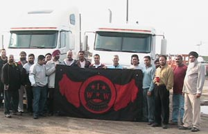

Submitted on Fri, 05/05/2006 - 4:20pm
A group of Tracy restaurant workers were fired this week after they failed to show up for work to protest against tougher immigration laws.
Fernando Martinez, a kitchen supervisor at Chevy’s Fresh Mex restaurant near West Valley Mall, said four others at the popular Mexican restaurant also have left their jobs after eight of their co-workers were dismissed.
“No one’s going to stay knowing that the whole team got fired,” he said.
Martinez, who said he was still employed at Chevy’s as of Wednesday, spoke on behalf of his co-workers, who risked their jobs when they went to Stockton on Monday to protest proposed changes in national immigration law.
The people who were fired, including cooks — prep cooks and dishwashers — said through an interpreter that they are all legal residents and had asked for the day off so they could join the protest in Stockton that drew an estimated 10,000 people.
Submitted on Tue, 04/25/2006 - 8:39pm
Building off the massive turnout at the April 10th immigrant rights rally in Madison, the Madison General Membership Branch of the IWW will be supporting the call for a General Strike call by the Latino/a community.
Madison IWW members will be working towards turning out as many folks as they can for the convergence on the State Capitol, to be held at 12:00 noon, May 1st. To facilitate this, the branch will be encouraging all local IWW jobshops to close their doors on that day. Two collectivly owned businesses with IWW members, the Madison Infoshop and Two Degrees Coffeshop, have already indicated their support.
The Madison IWW will be urging other workers to call in sick, take a personal day, or whatever, so that "business/terrorism as usual" does not continue. They are hoping to have a visable presence in the May 1st march and rally and have already printed General Strike posters, as well as a flyer with the May Day resolution of the IWW General Executive Board in Spanish and English. Their overaching theme will be: "No Borders, No States."
Submitted on Tue, 04/18/2006 - 7:37pm
 Considerando que la clase trabajadora no conoce fronteras, ni razas, sino que existe dondequiera que los trabajadores se exploten en beneficio del capital; y
Considerando que la clase trabajadora no conoce fronteras, ni razas, sino que existe dondequiera que los trabajadores se exploten en beneficio del capital; y
Considerando que todo ser humano tiene derecho a los medios para satisfacer las necesidades vitales para si y para su familia, a pesar de las barreras artificiales creadas por los gobiernos; y
Considerando que la naturaleza de las economías capitalistas atrae a trabajadores de todas partes hacia los centros de inversión capitalista, y a la vez saca la riqueza de economías "menos desarrolladas", eliminando así oportunidades de ganarse la vida en esas economías; y
Considerando que el reciente aumento en la inmigración en los Estados Unidos es el resultado directo de este proceso y especialmente de los destructivos tratados del llamado "comercio libre", impuestos en Latinoamérica por el gobierno de los Estados Unidos, tanto como la insaciable avaricia de los empleadores norteamericanos por una mano de obra inmigrante y dependiente que se puede obligar a trabajar bajo horribles condiciones y que se puede usar para socavar las condiciones de todos los trabajadores; y
Submitted on Thu, 04/13/2006 - 3:10pm
Disclaimer - This campiagn is unofficial; it is posted here in solidarity with the organizers.
May 1, 2006 - All U.S. Ports and Rails; The Community, Truck Drivers, and Students United!
“A Day Without Immigrants”
The March 25 Coalition has made a call for a GENERAL STRIKE for the entire nation to protest against HR 4437 and to show the power if the immigrant community. Los Angeles truck drivers will shut down and are asking for the solidarity of ALL truck drivers across the country. Amnesty for all immigrants!
The right to form labor unions!
An immediate SALARY increase of 25%
The Community and Students have spoken. Now it is our turn. WE have to show what we are worth and demand fair incomes. WE have to begin an era of strikes until the Ports and Rails enter into collective bargaining agreements with us. Until then, we must continue to form collectives at every company and support each other at the terminal, port and national levels. We ask all truck drivers to meet at the ports, rails, truck stops, and usual gathering locations.
Submitted on Mon, 04/10/2006 - 12:16pm
Whereas: the working class knows no borders or races, but exists wherever workers are exploited for the benefit of capital; and
Whereas: all human beings are entitled to the means of obtaining the necessities of life for themselves and their families, regardless of any artificial barriers created by government; and
Whereas: the nature of capitalist economies is to draw workers from all over to the centers of capitalist investment, while at the same time drawing wealth out of less-developed economies, thereby eliminating opportunities to earn a living within such economies; and
Whereas: the recent rise in immigration to the United States of America is directly attributable to this process, as exemplified by the destructive free-trade treaties forced upon Latin America by the United States government, as well as the insatiable lust of North American employers for a dependent, immigrant work-force that can be compelled to labor under sub-minimum wages and deplorable working conditions and used to undermine the working conditions of all workers; and